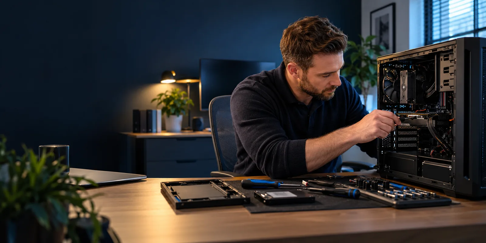

01↗
Computer will not start
Power, battery, charging, component and operating-system faults investigated methodically.
Discuss on WhatsApp
PC and laptop repairs in Manchester for homes and small businesses. Tell us about startup failures, crashes, overheating or a slow computer. We check the likely cause and discuss repair, upgrade or replacement options. On-site coverage is confirmed using your postcode; suitable software issues may be handled remotely.
Power, battery, charging, component and operating-system faults investigated methodically.
Discuss on WhatsAppStorage, memory, unwanted software, background activity and hardware condition assessed.
Discuss on WhatsAppIntermittent faults, blue screens, failed updates and application problems examined.
Discuss on WhatsAppCooling, dust, fans, drives and component stress checked before further damage develops.
Discuss on WhatsAppSuspicious pop-ups, account activity and unwanted programs reviewed with security in mind.
Discuss on WhatsAppUpdates, essential software, accounts, printers, backups and basic security configured.
Discuss on WhatsAppThese examples show the type of situation Hawk Eyes Cyber Tech can help with. The actual solution depends on what the assessment finds.
The laptop takes a long time to start, freezes during ordinary tasks and has very little free storage.
Hawk Eyes Cyber Tech can check storage health, memory use, unwanted software and background activity, then explain whether maintenance, an upgrade or replacement is the sensible option.
The computer powers on but stops at an error screen or repeatedly restarts before reaching the desktop.
We can investigate startup files, recent updates, storage condition and connected hardware while considering the safety of important files before attempting repairs.
The customer has bought a computer but needs help with updates, software, email, printers and transferring essential files.
Hawk Eyes Cyber Tech can prepare the device, connect suitable peripherals, configure everyday settings and discuss backup and security arrangements.
A structured check of power, storage, memory, cooling and other likely component causes.
Suitable parts replaced or upgraded where doing so offers a sensible improvement.
Operating-system, application, driver and update problems investigated and corrected.
Unwanted software removed, affected settings reviewed and practical protective steps explained.
New or rebuilt computers prepared for everyday use, including essential updates and peripherals.
A practical assessment of whether repair, upgrade or replacement is the more defensible option.
Support for the devices people rely on for communication, study, finances and everyday tasks.
Focused repair and setup support intended to reduce disruption to everyday operations.
Tell us what changed, what the computer is doing and anything already attempted.
The device and relevant software are checked before work is recommended.
Repair, upgrade and replacement considerations are explained in straightforward language.
The agreed work is carried out and the device is checked for reliable everyday use.
Depending on the problem, support may be provided at your home or workplace, or remotely with your permission. We agree the suitable route and scope before work begins. On-site appointments are arranged for a convenient time, subject to availability.
If your situation is not covered here, describe the problem by telephone or WhatsApp.
That depends on the fault, the age and specification of the device, the repair cost and what you need it to do. Hawk Eyes Cyber Tech will explain the practical trade-offs rather than assuming that replacement is always best.
Yes. Many problems involve both. A slow or unstable computer may have a software cause, a failing component or several smaller issues occurring together.
Data risk is considered before work begins. No repair can make an absolute promise about already failing storage, so backup and recovery options will be discussed when the condition of the device creates a concern.
Yes. Setup can include essential updates, accounts, software, printers, data transfer planning, backup arrangements and basic security configuration.
Send your postcode and a short description so we can confirm coverage and the suitable support route. Appointments, scope and charges are agreed before work begins. Read the service-fee information.
Describe what is happening and Hawk Eyes Cyber Tech will help establish the most useful next step.